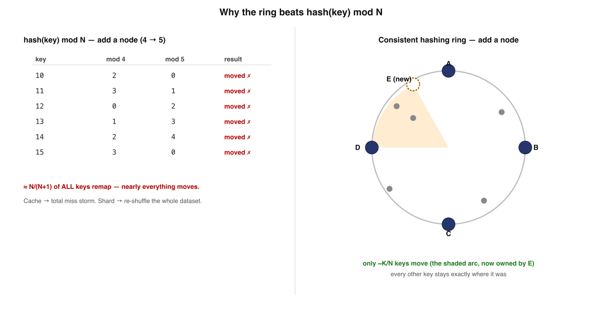
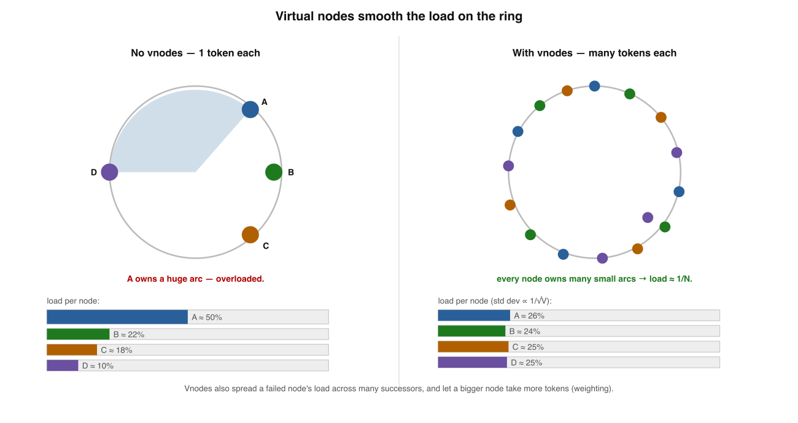
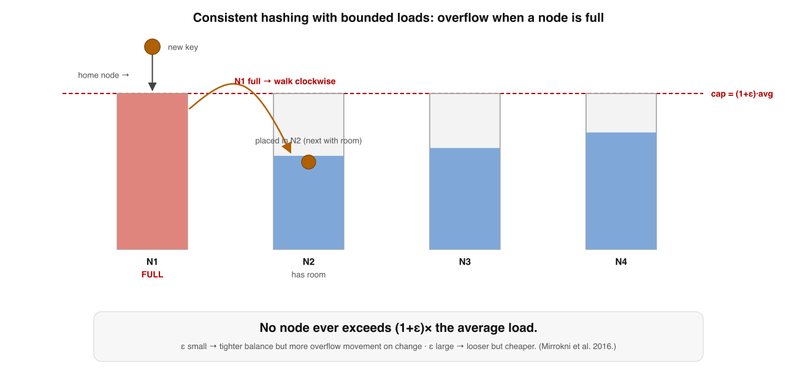

Applied Systems Design · deep dive · visual edition
Consistent Hashing
~25 min · 7 sections · diagrams + interview questions + interactive recall · supplement to Book 5, Lessons 6 & 8
Consistent hashingSystem designBack of envelopeApplied systems designMethod
Your bar: redraw the ring on a whiteboard and explain — from memory — why mod N is catastrophic,
why a bare ring is lopsided, how vnodes flatten it, and what to reach for when one key still runs hot.
Grounded in Karger et al. (STOC 1997)1 and Dynamo.2
One sentence holds the whole topic. Each section just unpacks one chip of it:
Consistent hashing maps keys and nodes to one ringso a membership change moves only K/N keysuses virtual nodes to keep load evenand a bounded-load cap when a key runs hot
Memorise this banner. Every section adds one detail: the price of the ring (uneven arcs), the fix (vnodes), the cap (bounded loads), and the alternatives.
1
mod N is the enemy
Understand what the ring is escaping before you build it. The obvious scheme collapses on every scaling event.
Reused from the source: mod N vs the ring. Below is the same comparison as a single ring picture.

Why the ring beats mod N.mod N remaps almost every key on a change; the ring steals only one neighbour's arc (~K/N) and leaves every other key exactly where it was.
mod N — what it ishash(key) mod N: balanced, O(1), trivial. The default everyone reaches for first.
Why it fails Change N and mod (N+1) ≠ mod N for almost every key. Expected fraction staying put ≈ 1/(N+1).
Cache blast radius Every key now hashes to the wrong node → every lookup misses → the stampede hits your DB at once.
Store blast radius A sharded store re-shuffles nearly the entire dataset across the network on every scaling event.
✗ "mod N is fine; rehashing on scale-up is a one-time blip"
✓ It re-scatters ~all keys every change — re-shuffle the dataset / stampede the DB
🎯 Memory rule: Consistent hashing exists for ONE property — a membership change moves only ~K/N keys (one node's worth), not nearly all of them.
Memory check
What fraction of keys stay put when N→N+1 under mod N? → ~1/(N+1) — almost none
Why is it worse for a cache than a store? → universal miss → DB stampede
The one property the ring buys? → only ~K/N keys move on a change
2
The ring — what actually moves
Map nodes and keys into the same hash space. A key belongs to the first node clockwise. That locality is the whole win.
Lookup = a successor search: binary-search the sorted node positions for the next one clockwise → O(log N). Remove a node and its arc falls to its clockwise successor — again ~K/N keys, to one node.
Placement A node sits at hash(node_id); a key is owned by the first node clockwise from hash(key). Same hash space for both.
Hash space A circle of 0 … 2³²−1 (Dynamo uses 2¹⁶⁰). Wrapping around the top is what makes it a ring.
Add Claims only the arc between it and its counter-clockwise neighbour — ~K/N keys from one node. Everyone else stays.
Remove Its arc's keys fall to the clockwise successor — again ~K/N keys, to one node.
✗ "Adding a node reshuffles keys across the cluster"
✓ It touches exactly one neighbour's arc; locality is the entire point
🧭 Memory rule: Lookup is a clockwise successor search (O(log N)); a membership change touches exactly one neighbour's arc — but those arcs are not equal.
Memory check
How is a key's owner found? → first node clockwise — a successor search, O(log N)
On add, where do the moved keys come from? → one node: the new node's predecessor arc
What price did locality buy us? → unequal arcs → load imbalance
3
Virtual nodes — fixing the lopsided ring
Random placement does NOT give equal arcs. The most-loaded node can hold log N× the average. Vnodes are an averaging machine.
New SVG: same physical node's vnodes share a colour. Below is the source diagram of the same idea.

Virtual nodes smooth the load. Each physical node owns many small vnodes scattered around the ring, so its total load — the sum of many independent arcs — converges to 1/N.
The problem Random placement → largest arc ≈ Θ((log N)/N); the hottest node can hold log N× average. With few nodes, one routinely owns 2–3× another.
The fix Hash each physical node to many positions (V ≈ 100–200). N nodes scatter N·V points around the ring.
Why it works A node's load = the sum of its V little arcs. Averaging V independent pieces concentrates load at 1/N with std dev ~ 1/√V — within a few % of uniform.
Three dividends ① balance (1/√V) · ② graceful failure (a dead node's vnodes spread to many successors, not one) · ③ heterogeneity (2× capacity = 2× vnodes — weighting for free).
✗ "N random nodes carve N roughly-equal arcs"
✓ Random placement is lopsided; only vnodes (summing many arcs) flatten it
🌀 Memory rule: A bare ring is a hot-spot generator. Vnodes turn each node into a sum of many arcs — variance shrinks like 1/√V. Dynamo, Cassandra, Riak all use tokens, never a bare ring.
Memory check
How bad is a bare ring? → hottest node ≈ log N × average
Why do vnodes balance? → load = sum of V arcs; std dev ~ 1/√V
Two extra dividends besides balance? → graceful failure spread + free weighting
4
Bounded loads — when one key still runs hot
Vnodes balance the keyspace, not popularity. A viral key has exactly one home. Cap every node and overflow clockwise.

Consistent hashing with bounded loads. Cap each node at (1+ε)× average. A key whose home node is full overflows clockwise to the next node with room — so no node can exceed the cap.New SVG: the overflow walk. The guarantee — no node ever exceeds (1+ε)× average — holds while a membership change still moves only a bounded fraction of keys.
Why vnodes aren't enough They balance the keyspace but assume keys are equally popular. A viral key (or live connections in a cache / LB) hammers its one home node.
The mechanism Pick slack ε > 0; cap each node at (1+ε)× average. A key whose home is at capacity walks clockwise to the next node with room.
The knob ε Small ε → tight balance, more overflow reassignment on change. Large ε → looser cap, cheaper.
In the wild Google Cloud load balancing and HAProxy balance modes use exactly this. The answer to "vnodes balanced my keyspace but node 7 is still on fire."
✗ "Vnodes guarantee even load, so no node can overload"
✓ Vnodes balance keyspace, not popularity; bounded loads cap actual load
🔥 Memory rule: Bounded loads (Mirrokni–Thorup–Zadimoghaddam 2016)3 caps each node at (1+ε)× average and overflows clockwise — guaranteeing the cap while keeping movement bounded.
Memory check
Why don't vnodes solve a viral key? → they balance keyspace, not popularity; one key = one home
What does a full node do with a new key? → overflow clockwise to the next node with room
What does ε trade off? → tight balance vs overflow churn on change
5
You may not need a ring
The ring is the famous answer, not the only one — and often not the best one. Two alternatives that drop the ring entirely.
HRW: argmax over nodes of hash(k, node). Jump hash: a 5-line function mapping k to a bucket in 0…N−1.
Scheme
Lookup
Balance
Arbitrary removal
Weights
Ring + vnodes
O(log N)
good (needs vnodes)
yes
yes (more vnodes)
Rendezvous (HRW)
O(N)
excellent
yes
yes
Jump hash
O(log N)
perfect
no (high-end only)
no
Rendezvous (HRW) — for free Removing a node only re-homes keys whose top weight was that node → exactly K/N move. Uniform argmax → no log N imbalance, no vnodes.4
HRW — the costO(N) per lookup. Fine for tens-to-low-hundreds of nodes (the common case); for huge N go back to a ring or hierarchy.
Jump hash — the gift 5 lines, zero memory, very fast, perfect balance, minimal remap. Ideal for resharding a numbered range (8→10 shards).5
Jump hash — the trap Grows/shrinks only at the high end and has no weights. Wrong for arbitrary cluster membership where any node may fail. Gorgeous and narrow.
✗ "Consistent hashing means the ring; reach for it by default"
✓ For small/medium clusters HRW is often simpler & more balanced; jump hash wins for numbered reshards
🧰 Memory rule: Ring+vnodes for arbitrary membership at scale · HRW for simple, well-balanced small clusters · jump hash only for a numbered range that grows at the end.
Memory check
HRW's lookup cost and why it's still common? → O(N); fine for ≤ low-hundreds of nodes, balanced with no vnodes
When is jump hash wrong? → arbitrary middle-node removal; it grows only at the high end
Which alternative needs no vnodes for balance? → HRW (uniform argmax)
6
Replication — the preference list
A key isn't on one node but N. The replicas are the next N distinct physical nodes clockwise — skip duplicate vnodes, prefer distinct racks.
This ordered list of distinct physical targets is Dynamo's preference list — exactly the set the R + W > N quorum operates over.
Replicas The next N nodes clockwise — but you must reach N distinct physical nodes, skipping extra vnodes of a machine you already picked.
The vnode trap Naïvely taking the next N vnodes can land all "replicas" on one machine — a single failure then loses the key.
Rack / AZ awareness Prefer distinct racks / availability zones so a rack power loss doesn't take all N replicas at once.
How it composes Hashing decides which nodes hold a key; the quorum (R + W > N) decides how many must agree. Together: the whole storage layer.
✗ "Replicas = the next N vnodes clockwise"
✓ The next N DISTINCT physical nodes (ideally distinct racks) — or one failure loses the key
🗂️ Memory rule: The preference list = next N distinct physical nodes clockwise (across racks). Hashing picks which nodes; quorum picks how many agree.
Memory check
Why "distinct physical" and not just "next N"? → extra vnodes collapse replicas onto one machine
Why prefer distinct racks/AZs? → survive a rack/zone power loss
How does hashing relate to quorum? → which nodes (hash) vs how many agree (R+W>N)
Retrieval practice — mix the sections
Answer from memory; the highlighted option is correct. Each one targets a different failure mode of the naïve mental model.
Q1. Adding one node under hash(key) mod N is catastrophic because…
Q2. Virtual nodes reduce load imbalance on a hash ring because…
Q3. Consistent hashing with bounded loads handles a hot node by…
Q4. Jump consistent hash is the wrong choice when you need to…
Q5. A lookup on a vnode ring is implemented as…
Q6. Building a replica preference list on a vnode ring, you must…
Reconstruct the topic from a blank page
Draw the ring, then write the six beats in order, one line each, with nothing on screen. Reveal and compare — gaps are your next drill.
1 mod N re-scatters ~all keys on a change · 2 ring: key → first node clockwise; a change moves ~K/N from one neighbour ·
3 vnodes: load = sum of V arcs, std dev ~1/√V; balance + graceful failure + free weighting ·
4 bounded loads: cap (1+ε)× avg, overflow clockwise — for popularity skew ·
5 alternatives: HRW (argmax, O(N), no vnodes), jump hash (no memory, high-end only) ·
6 replication: preference list = next N distinct physical nodes / racks; quorum R+W>N runs over it.
I'm your teacher — ask me anything. Say "grill me on consistent hashing" for mixed
no-clue questions, or hand me a real workload (cache, sharded store, L7 load balancer) and I'll walk you through
ring vs HRW vs jump hash, your vnode count, and whether you need bounded loads. Want a spaced, interleaved drill set? Just ask.
Interview — pick your bar
Answer out loud in ~60s, then reveal. Core = recall · Senior = trade-offs & failure modes · Staff = synthesis under ambiguity · System Design = open design round (a different axis, not a harder level).
What problem does consistent hashing solve, and what's the one property it buys?
Hit these points: it maps keys and nodes into one hash space (a ring, 0…2³²−1; Dynamo uses 2¹⁶⁰) → a key is owned by the first node clockwise → the property: a membership change (add/remove a node) moves only ~K/N keys — one node's worth — instead of nearly all of them → that's the entire reason it exists, versus mod N which has no locality.
Why is hash(key) mod N a trap? Quantify what happens when you add a node.
Hit these points:mod N is balanced and O(1), so it's the default everyone reaches for → but it has no locality: when N → N+1, mod (N+1) ≠ mod N for almost every key → the expected fraction that stays put is only ~1/(N+1) — nearly every key remaps → for a cache that means a universal miss → DB stampede; for a sharded store it means re-shuffling almost the whole dataset over the network on every scaling event.
Walk me through a lookup on the ring and what its cost is.
Hit these points: a node sits at hash(node_id); a key is owned by the first node clockwise from hash(key) — same hash space for both → lookup is a successor search: binary-search the sorted node positions for the next one clockwise, wrapping past the top of the ring → that's O(log N) in the number of (v)node positions → the wrap-around at 2³₂ is what makes it a ring rather than a line.
Exactly which keys move when a node joins, and which when one leaves?
Hit these points: on add, the new node claims only the arc between it and its counter-clockwise neighbour — ~K/N keys, taken from one node; every other key stays exactly where it was → on remove, that node's arc falls to its clockwise successor — again ~K/N keys, to one node → the locality (only one neighbour's arc is disturbed) is the whole win, and it's what mod N cannot give you.
A bare ring with 5 nodes is hot-spotting. Diagnose it with the math, then fix it.
Hit these points: random placement does NOT give equal arcs — the largest arc is ~Θ((log N)/N), so the hottest node can hold ~log N× the average; with few nodes one routinely owns 2–3× another → fix: virtual nodes — hash each physical node to many positions (V ≈ 100–200), scattering N·V points around the ring → a node's load becomes the sum of V independent little arcs, which concentrates at 1/N with std dev ~1/√V — within a few % of uniform → bonus dividends: a dead node's vnodes spread to many successors (graceful failure), and 2× capacity = 2× vnodes gives weighting for free.
Vnodes balanced my keyspace but one node is still on fire. What's the failure mode and the fix?
Hit these points: vnodes balance the keyspace, not popularity — a single viral key has exactly one home node, and no amount of vnode count splits one key → reach for consistent hashing with bounded loads: cap each node at (1+ε)× the average load and, when a key's home node is full, overflow it clockwise to the next node with spare capacity → this guarantees no node exceeds the cap while keeping the extra key movement bounded → ε is the knob: small ε = tighter balance but more churn/overflow, larger ε = looser cap but less movement → used in GCP's load balancer and HAProxy → if the hot key is read-heavy specifically, also replicate it across more nodes so reads fan out.
How do you place N replicas on a vnode ring, and what's the classic bug?
Hit these points: walk clockwise from the key's position and pick the next N distinct physical nodes — that ordered set is Dynamo's preference list → the classic bug: naively taking the next N ring positions can land several replicas on vnodes of the same physical machine, so one host failure loses the key entirely — you must skip vnodes whose physical node is already chosen → go further and prefer distinct racks/AZs so a rack power loss or AZ outage doesn't take all N copies → the preference list is exactly the set the R + W > N quorum operates over.
When would you pick rendezvous (HRW) or jump hash over a vnode ring?
Hit these points:HRW assigns a key to the node with the highest hash(key, node) (argmax) — it gives K/N-minimal movement and uniform balance with no vnode bookkeeping, so it's simpler and more balanced for tens-to-low-hundreds of nodes, at the cost of O(N) per lookup → jump hash is ~5 lines, zero memory, perfect balance — but buckets only grow/shrink at the high end and it has no weighting, so it fits numbered reshards (8 → 10) and is wrong for arbitrary node failure or heterogeneous capacity → the vnode ring wins when you need incremental, weighted, arbitrary membership changes — which is most real clusters.
Separate consistent hashing from quorum replication. Where's the boundary, and why does it matter?
Hit these points: they are two orthogonal decisions that people conflate → consistent hashing answers which nodes hold a key — placement, the ring, vnodes, and the preference list (routing + rebalancing) → the quorum answers how many must agree — R + W > N guarantees a read overlaps the latest write → together they form the storage layer, but you can vary one without the other: tune R/W for the consistency/availability point (W=1 for always-writeable) while the ring stays fixed, or change vnode count/placement without touching the quorum → why it matters: a membership change is a placement event (re-replicate ~K/N keys to new owners), while a slow/lost node is a quorum event (hinted handoff, read-repair) — keeping them separate is how you reason about each failure cleanly.
Argue for vnodes — then steelman why a system might deliberately avoid them.
For: a bare ring is a hot-spot generator (hottest node ~log N× average); vnodes turn each node into a sum of many arcs so load concentrates at 1/N with variance ~1/√V, and they give graceful failure spread and free weighting — which is why Dynamo, Cassandra and Riak all use tokens. Steelman against: vnodes multiply ring metadata (N·V positions) and gossip/membership overhead; range scans and ordered iteration fragment across many small arcs; rebuilding/streaming a node's data touches many peers; and at small, homogeneous, fixed-size clusters HRW gives equal-or-better balance with simpler reasoning. Synthesis: default to vnodes for large, heterogeneous, frequently-changing clusters; tune V to trade balance against metadata; consider HRW or fewer tokens when N is small and stable or when ordered range access dominates — pick by membership volatility, heterogeneity, and access pattern, not by reflex.
A team caches with mod N and says "rehashing on scale-up is a one-time blip." Make the principal-level call.
Hit these points: reject the framing — it's not a one-time blip, it recurs on every membership change, planned or not: a deploy, an autoscale event, or a single node death all change N → each one re-scatters ~all keys, so the cache cold-starts and the full miss traffic stampedes the DB at exactly the moment you're already losing capacity (a node just died) → that couples a routine operational event to a correlated DB overload — a reliability hazard, not a performance footnote → the fix is cheap and well-understood: a consistent-hashing ring with vnodes limits movement to ~K/N and confines the miss blast radius to one node's keys → quantify it for them: with 50 nodes, mod N invalidates ~98% of keys on one change, the ring ~2% → principal move: mandate the ring (or HRW) for any cluster whose membership ever changes, and add stampede protection (single-flight + jittered TTLs) regardless, so even the ~K/N miss can't take the DB down.
Design-round framework — drive any "partition/route across a fleet" prompt through these, out loud:
Requirements — membership volatility (how often N changes), node heterogeneity, replication factor, ordered-scan needs, hot-key risk.
Scheme choice — ring+vnodes (arbitrary, weighted, incremental) vs HRW (small/stable) vs jump hash (numbered reshards only); justify against the requirements.
Hash space & placement — ring size, V per node (and weighting via vnode count), successor-search lookup cost.
Rebalancing — what moves on add/remove (~K/N to one neighbour), how data streams, and the throttle to avoid saturating the network.
Balance & hot spots — vnode variance (1/√V) for keyspace skew; bounded loads ((1+ε) cap + clockwise overflow) and/or hot-key replication for popularity skew.
Replication placement — next N distinct physical nodes / racks / AZs (the preference list); how it composes with R + W > N.
Failure & operations — node death (re-replication, hinted handoff), correlated failures, membership detection (gossip), and the metadata/overhead cost you accepted.
Design the sharding/routing layer for a 100-node distributed cache.
A strong answer covers: clarify — membership changes often (deploys, autoscale, failures), nodes may be heterogeneous, items are hot/popular, replication optional → pick a consistent-hashing ring in a 2³²/2¹⁶⁰ space with V ≈ 128–256 vnodes/node for balance and capacity-weighting → lookup is an O(log N) successor search over sorted token positions → on membership change only ~K/N keys move (one node's worth), so the miss blast radius and the DB stampede are confined to one node's keyspace → because cache items are popular, add bounded loads with a small ε so no single node can be buried by a hot home arc, and replicate genuinely viral keys for read fan-out → if replicated, use a rack/AZ-aware preference list of the next N distinct physical nodes → protect the DB on every reshard with single-flight + jittered TTLs → failure modes: hot key, correlated rack loss, reshard streaming saturating the network (throttle it) → trade-off: mention HRW as a simpler alternative at ~100 nodes, but justify the ring for incremental, weighted, arbitrary membership.
Design partitioning + replication for a write-heavy distributed key-value store that must survive node and AZ loss.
A strong answer covers: clarify — durability and availability targets, the consistency bar (eventual + conflict resolution acceptable?), and that it's write-heavy → placement: consistent-hashing ring with vnodes so a membership change moves only ~K/N keys and load stays even; weight vnodes by node capacity for heterogeneity → replication: each key to the next N=3 distinct physical nodes clockwise (the preference list), spread across racks/AZs so an AZ loss doesn't take all N copies → consistency: leaderless tunable quorums, R + W > N for overlap; W can be low for write-availability at the cost of more reconciliation → concurrent writes → vector clocks / version vectors return siblings to merge rather than blind last-write-wins → write-heavy storage engine: an LSM-tree per node → failure handling: hinted handoff for a briefly-down node, Merkle-tree anti-entropy + read-repair for divergence, gossip for membership/failure detection, throttled re-replication on permanent loss → rebalancing: adding capacity moves ~K/N keys to the new owners; stream in the background with backpressure → trade-off: this is an AP design (CAP) that accepts temporary inconsistency under partition — if strong consistency were required you'd shift to single-leader-per-shard with synchronous replication, losing some write availability.
★ Cheat sheet — claim → engineering
Mental models: mod N = no locality (re-scatters all) · ring = first node clockwise (~K/N moves) · vnodes = sum of arcs (1/√V) · bounded loads = (1+ε) cap + overflow · HRW = argmax, O(N) · jump hash = 5 lines, high-end only · preference list = next N distinct physical nodes.
Translation table
Term
What it actually is
Consistent hashing
Same ring for keys + nodes so a change moves ~K/N keys
Successor search
Binary search of sorted node positions, clockwise — O(log N)
Virtual node / token
One of V ring positions per physical node; balances via 1/√V
Bounded loads
Per-node cap (1+ε)× average; full node overflows clockwise
Rendezvous / HRW
Assign key to node with highest hash(k,node); no ring
Jump hash
5-line key→bucket (0…N−1); zero memory; high-end resize only
Preference list
Next N distinct physical nodes/racks; the set R+W>N runs over
Three rules for the design round
① Never mod N for cluster membership — it re-scatters everything. ② A bare ring is a hot-spot generator; always use vnodes (or HRW). ③ Match scheme to job: ring for arbitrary membership, HRW for small balanced clusters, jump hash only for numbered reshards.
📄 Supplement to Book 5, Lessons 6 & 8 · DDIA Ch. 6 (Partitioning)Next ▸ interleaved retrieval drills (ask me to build it)
Was this lesson helpful?Thanks — noted.
These notes reflect my current understanding and are updated as I learn, build, and discover better explanations.